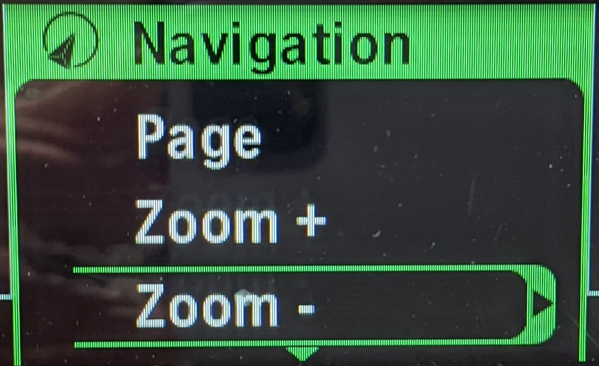
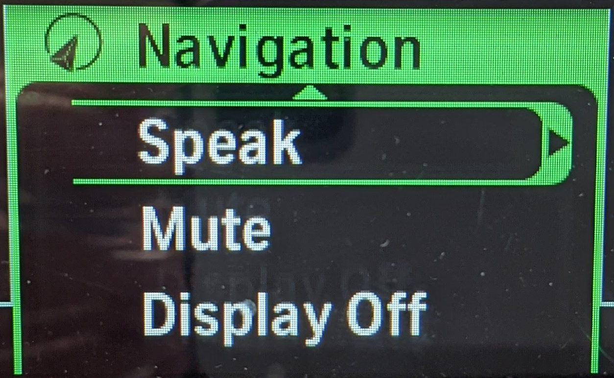
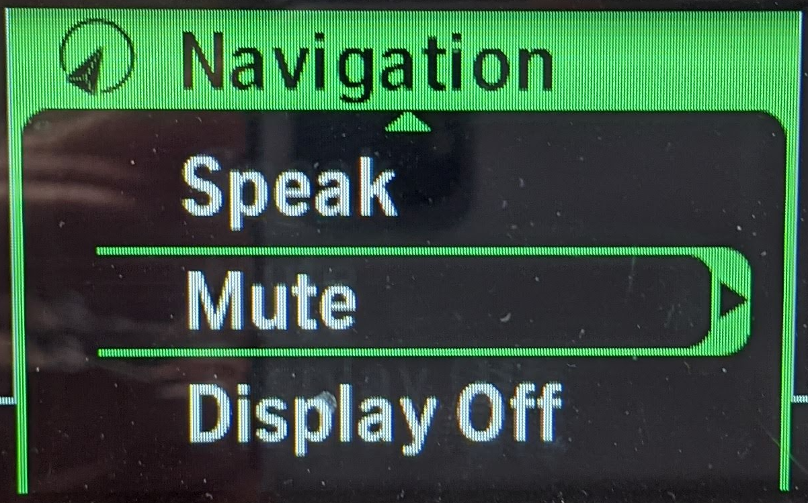
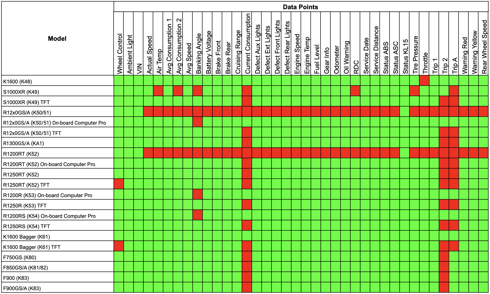

Documentation du navigateur WunderLINQ
Version 1.0
Introduction
Premièrement, merci d'avoir fait l'achat de votre WunderLINQ !
Cette documentation couvre l'installation et l'utilisation du matériel WunderLINQ sur votre moto. Veuillez lire entièrement le document avant de tenter l'installation.
Exigences
Vous devrez suivre les étapes suivantes pour installer le WunderLINQ sur votre moto.
- Module WunderLINQ
- Une moto BMW avec l'option préparation pour la navigation
Pour les données des capteurs et les diagnostiques, votre moto doit être équipée de l'option Ordinateur de bord pro.
Installer
Cette vidéo couvre l'installation du navigateur WunderLINQ.
Application WunderLINQ installée
Maintenant que le matériel WunderLINQ est installé, installez et configurez l'application WunderLINQ. Veuillez consulter la documentation de notre application sur le lien suivant.
Remarques sur l'utilisation
Vous trouverez ci-dessous les correspondances entre la molette de sélection et l'entrée clavier. Si vous utilisez le WunderLINQ avec un RT ou un K1600, consultez le tableau des correspondances à la fin de cette section.

| Commandes manuelles | Touche clavier | |
|---|---|---|
| Tournez la molette vers le haut | Flèche vers le haut | |
| Tournez la molette vers le bas | Flèche vers le bas | |
| Molette vers la gauche | Flèche vers la gauche | |
| Molette vers la droite | Flèche vers la droite | |
| Molette vers la gauche | ÉCHAPPE | |
| Maintenir la molette vers la droite durant quelques secondes | VALIDER | |
| Presser le bouton du clignotant | Basculement du clavier iOS | WunderLINQ V2 ou plus récent |
| Presser le bouton du clignotant durant quelques secondes | Couper le son du smartphone | WunderLINQ V2 ou plus récent |
Si votre moto est équipé d'un écran TFT, veuillez consulter les remarques ci-dessous.

Si votre moto est équipé d'un écran TFT, vous verrez un message sur le TFT une fois que le WunderLINQ a été inséré son support.

Le TFT indique quel appareil est actuellement géré via la molette dans le coin supérieur gauche une fois que le WunderLINQ a été détecté. Basculer la molette sur WunderLINQ en changeant le mode sur Nav en appuyant longuement sur le bouton Menu UP.

Pour revenir sur la gestion de l'écran TFT via la molette, appuyer sur le bouton du menu vers le bas
Vous trouverez ci-dessous les correspondances entre les commandes de la molette de sélection et les actions sur la RT et la K1600.
| Commandes manuelles | Touche clavier | ||
|---|---|---|---|
 |
Zoom+ | Flèche vers le haut | |
|  | Zoom- | Flèche vers le bas | |
|  | Parlez | Flèche vers la gauche | |
 |
Page | Flèche vers la droite | |
| Parlez Double-cliquez | ÉCHAPPE | ||
|
Page Double-cliquez | VALIDER | |
 |
Affichage désactivé | Basculement du clavier iOS | WunderLINQ V2 ou plus récent |
|  | Muet | Couper le son du smartphone | WunderLINQ V2 ou plus récent |
{kind=link}
{kind=link}
{kind=link}
Si votre moto a une console TFT, vous devez la mettre en mode Nav pour faire fonctionner les sélections de la molette de sélection.
Compatibilité
Le WunderLINQ est conçu pour fonctionner avec les motos BMW équipées du contrôleur multifonction BMW (WW), de l'option On-Board Computer Pro et équipées de l'option Navigation Prep. Essentiellement, toute moto BMW équipée pour utiliser les unités GPS BMW Nav 5/6 fonctionnera avec le WundeLINQ. Pour confirmer que votre vélo dispose de ces options, veuillez vérifier la fiche de construction de votre vélo via une application/un site de recherche de VIN. En général, la plupart des motos BMW fabriquées après 2013 ont les options susmentionnées. La manière dont ces options sont mises en œuvre et, en fin de compte, le fonctionnement de WunderLINQ dépendent du modèle/de l'année. Veuillez consulter la liste des notes de fonction Modèle/Année.
Veuillez noter que seul le berceau officiel BMW Navigation est pris en charge.
Modèle/Année Fonction Remarques
R1200GS/R1250GS/R1300GS
2013- Roue de contrôle
- Données complètes
- Roue de contrôle
- Données complètes
R1200RS/R1200R/R1250RS/R1250R
2015-Current- Roue de contrôle
- Données complètes
F750/F850/F900
All model years- Roue de contrôle
- Données complètes
S1000XR
2015–2019- Roue de contrôle
- Données complètes
- Roue de contrôle
- Données complètes
R1200RT/R1250RT/K1600
2013-2017- Roue de contrôle
- Données complètes
- Roue de contrôle
- Données complètes
- NO_CONTROL
- Données complètes
Matrice de disponibilité des points de données
{kind=link}
Dépannage
LED bleue/verte fixe ou pas de LED
Si le voyant de l'unité WunderLINQ devient immédiatement vert/bleu fixe ou ne s'allume pas du tout lors de l'insertion, l'unité est en panne et doit être remplacée.
Informations Complémentaires
Micrologiciel WunderLINQ
Journal des modifications du micrologiciel WunderLINQ
Support
Groupe d'utilisateurs WunderLINQ
Autres liens
Code source de la documentation WunderLINQ
Clause de non-responsabilité
AVERTISSEMENT : L'utilisation de WunderLINQ, un produit fabriqué par Black Box Embedded, LLC, sur votre moto est à vos risques et périls. Ce produit est destiné à une utilisation hors route uniquement et ne doit pas être utilisé sur les voies publiques ou les autoroutes. Black Box Embedded, LLC ne sera pas responsable des dommages, blessures ou dommages causés par l'utilisation de ce produit. En utilisant ce produit, vous reconnaissez et acceptez les risques associés à son utilisation, et vous acceptez de renoncer à toute réclamation que vous pourriez avoir contre Black Box Embedded, LLC pour tout dommage, blessure ou préjudice causé par l'utilisation de ce produit. Ce produit est destiné à être utilisé uniquement par des cyclistes expérimentés et ne doit pas être utilisé par des cyclistes débutants ou inexpérimentés. Faites toujours preuve de prudence et roulez de manière responsable.
Les produits WunderLINQ doivent toujours être installés par un technicien qualifié. Si vous n'êtes pas sûr de votre capacité à installer correctement un produit, veuillez faire installer le produit par votre technicien moto local. Black Box Embedded, LLC n'assume aucune responsabilité pour les dommages causés par une mauvaise installation. AVERTISSEMENT : lors de l'installation de l'électronique, il est extrêmement important de porter une attention particulière à la manière dont les fils sont acheminés, en particulier lors du montage des produits sur le garde-boue avant, la fourche avant ou le carénage de votre moto. Assurez-vous toujours de tourner le guidon complètement à gauche et complètement à droite, et de compresser complètement la suspension pour vous assurer que les câbles ne se coincent pas et ont suffisamment de jeu pour que votre moto fonctionne correctement.